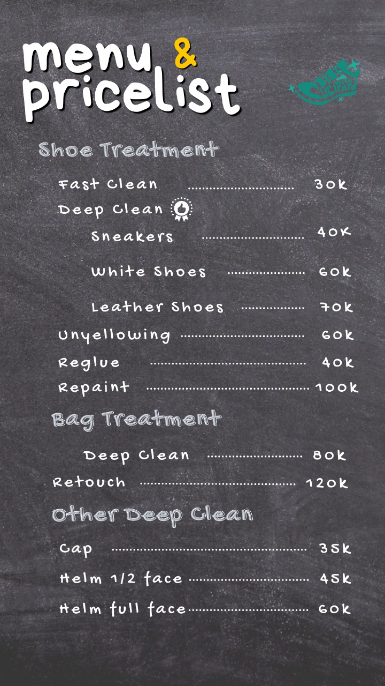
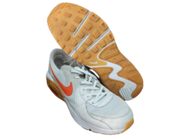
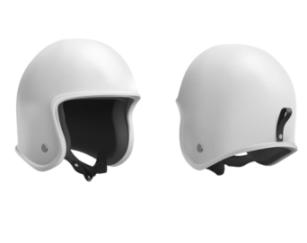
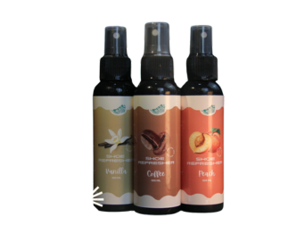
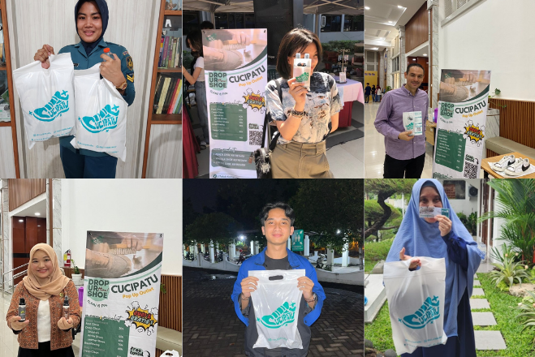

Berikut produk dan layanan dari Cucipatu: pembersihan sepatu dan tas yang cepat, aman, dan menyeluruh.
Kami juga menyediakan semprotan penyegar sepatu dengan berbagai aroma.
Temukan aroma favorit dan kenyamanan Anda bersama Cucipatu!
×


Jasa Laundry Tas dan Sepatu
Kami menyediakan laundry tas dan sepatu dengan pembersihan mendalam dan layanan
khusus seperti Unyellowing, Reglue, dan Repaint untuk sepatu, serta Deep Clean dan Retouch untuk tas.
Kami menggunakan teknik canggih dan bahan berkualitas untuk hasil terbaik.

Helmet laundry services
Kami menyediakan layanan laundry tas dan sepatu yang cepat, aman, dan menyeluruh.
Untuk sepatu, kami menawarkan pembersihan mendalam untuk sneakers, sepatu kulit, dan sepatu putih, serta layanan khusus seperti Unyellowing, Reglue, dan Repaint.
Untuk tas, kami menyediakan layanan Deep Clean dan Retouch. Dengan teknik canggih dan bahan berkualitas

Spray Penyegar Sepatu
Semprotan penyegar sepatu kami tersedia dalam berbagai aroma segar seperti vanilla dan peach,
memberikan kesegaran sepanjang hari untuk sepatu Anda.

Temukan
TESTIMONI
Cucipatu sudah dipercaya oleh banyak konsumen di Surabaya dan sekitarnya.
Dari semprotan penyegar sepatu hingga layanan laundry sepatu, produk dan jasa
kami telah digunakan oleh berbagai kalangan. Kini giliran kamu! #MostExpertShoesCare